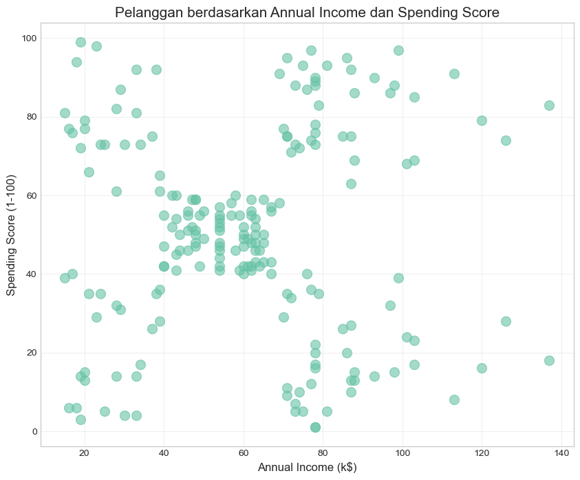
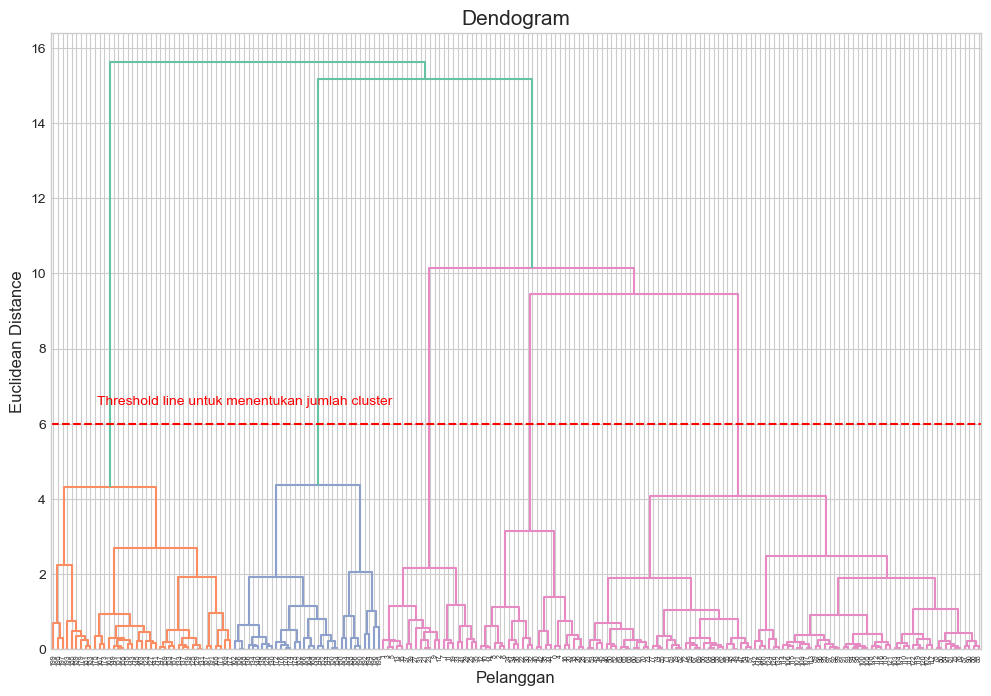
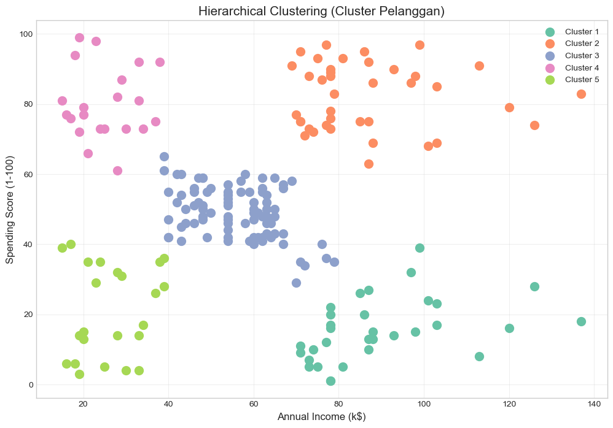
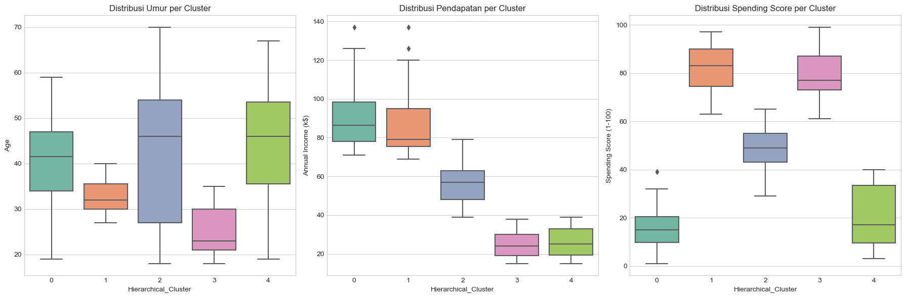
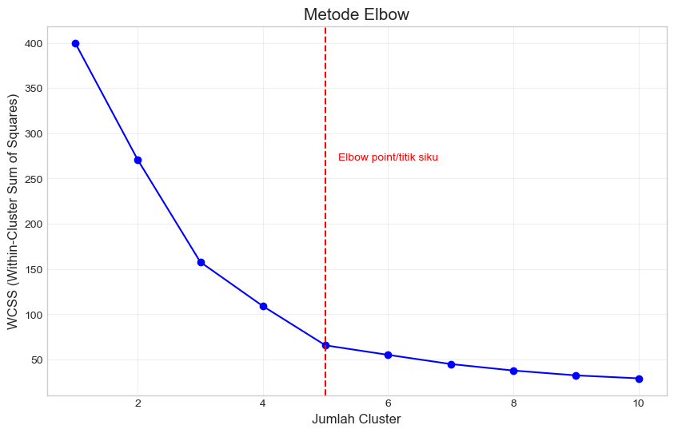
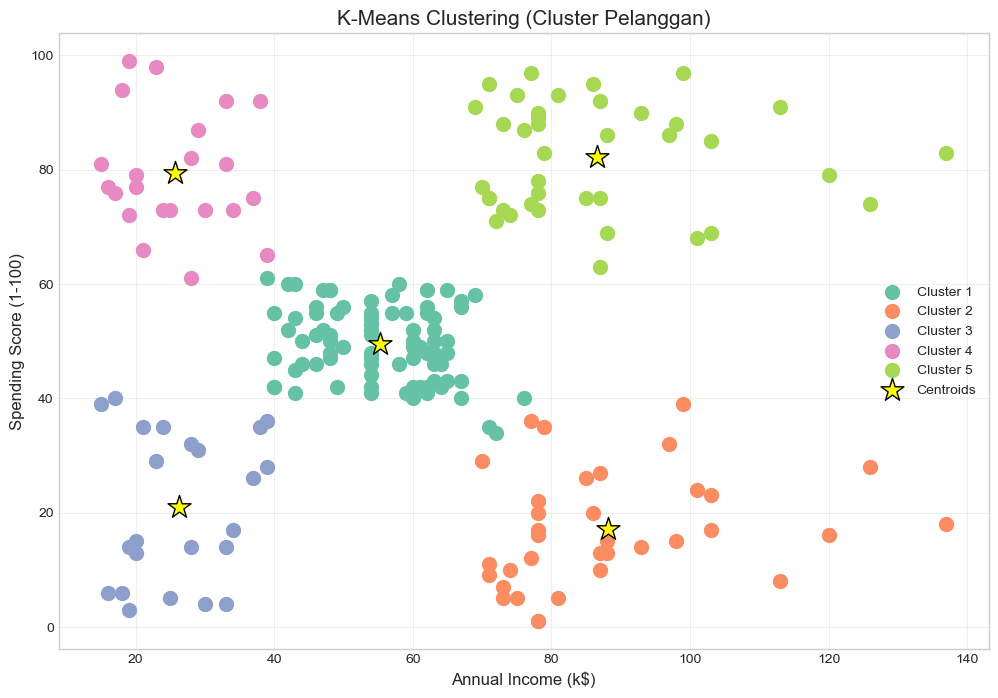
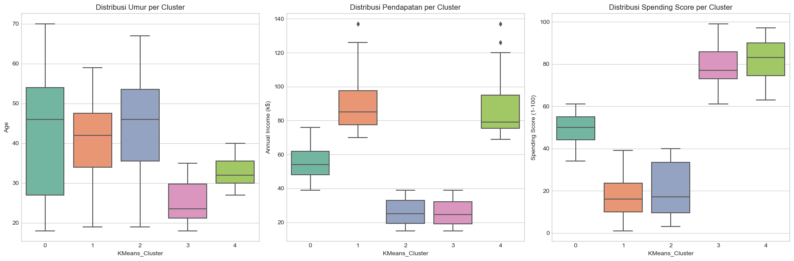
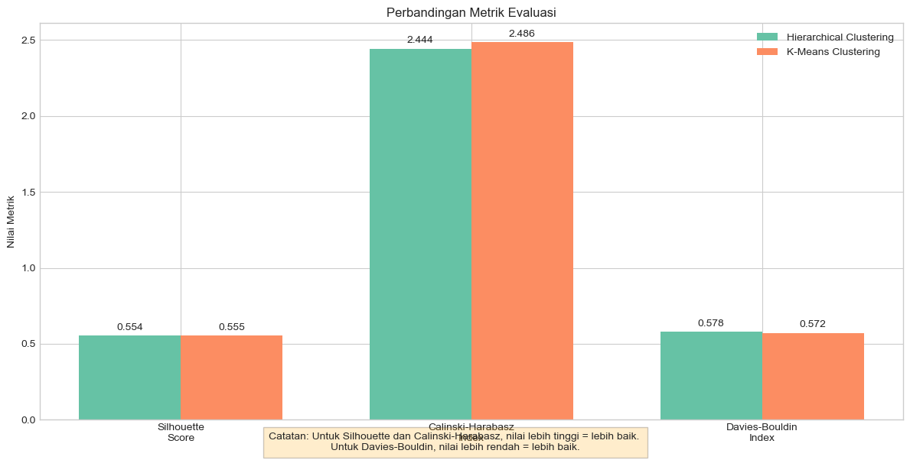
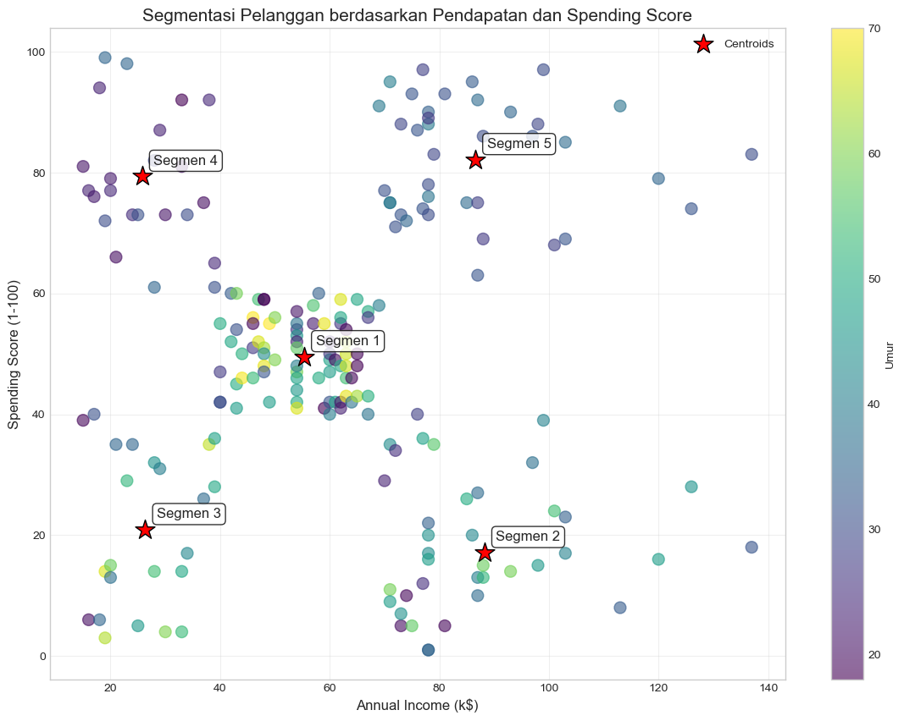
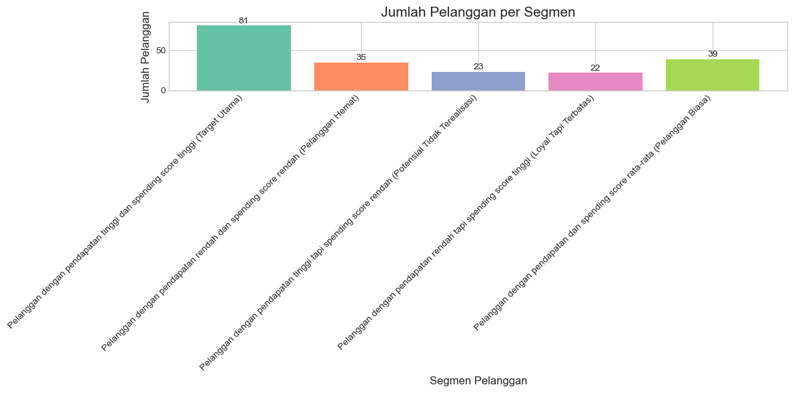

# Import library yang diperlukan
import numpy as np
import pandas as pd
import matplotlib.pyplot as plt
import seaborn as sns
from sklearn.preprocessing import StandardScaler
from sklearn.cluster import AgglomerativeClustering, KMeans
from sklearn.metrics import silhouette_score, calinski_harabasz_score, davies_bouldin_score
import scipy.cluster.hierarchy as sch
from sklearn.datasets import make_blobs
# Set style plotting
plt.style.use('seaborn-v0_8-whitegrid')
plt.rcParams['figure.figsize'] = (12, 8)
sns.set_palette('Set2')
# Menetapkan random seed untuk reproduksibilitas
np.random.seed(42)Notebook Clustering: Hierarchical dan K-Means
Pada praktikum ini, kita akan mengeksplorasi dua teknik clustering utama: 1. Hierarchical Clustering (Clustering Hirarki) 2. K-Means Clustering (Clustering Non-Hirarki)
Kemudian kita akan mempelajari bagaimana mengevaluasi hasil clustering menggunakan berbagai metrik.
1. Persiapan Data
Pertama, kita impor library yang diperlukan dan menyiapkan dataset untuk analisis clustering. Kita akan menggunakan dataset Mall Customers yang berisi informasi tentang pelanggan di sebuah mall.
1.1 Load dan Eksplorasi Dataset
Kita akan menggunakan dataset Mall Customers yang berisi informasi tentang pelanggan mall seperti usia, pendapatan, dan skor spending. Dataset ini cocok untuk demonstrasi teknik clustering karena kita ingin menemukan segment pelanggan berdasarkan pola belanja.
Keterangan Dataset:
CustomerID: ID PelangganGender: Jenis KelaminAge: UsiaAnnual Income (k$): Pendapatan Tahunan dalam ribuan dolarSpending Score (1-100): Skor Belanja (1-100), Skor ini merepresentasikan tingkat loyalitas atau kecenderungan pelanggan dalam berbelanja di mall tersebut. Nilai yang lebih tinggi menunjukkan pelanggan lebih sering dan lebih banyak berbelanja, sedangkan nilai rendah menunjukkan aktivitas belanja yang lebih sedikit.
# Load dataset
url = 'https://raw.githubusercontent.com/SteffiPeTaffy/machineLearningAZ/master/Machine%20Learning%20A-Z%20Template%20Folder/Part%204%20-%20Clustering/Section%2025%20-%20Hierarchical%20Clustering/Mall_Customers.csv'
df = pd.read_csv(url)
# Tampilkan informasi dataset
print("Informasi Dataset:")
print(f"Jumlah baris: {df.shape[0]}")
print(f"Jumlah kolom: {df.shape[1]}")
print("\nLima baris pertama:")
display(df.head())
# Statistik deskriptif
display(df.describe())
# Cek apakah ada missing value
print("\nMissing values:")
display(df.isnull().sum())Informasi Dataset:
Jumlah baris: 200
Jumlah kolom: 5
Lima baris pertama:| CustomerID | Genre | Age | Annual Income (k$) | Spending Score (1-100) | |
|---|---|---|---|---|---|
| 0 | 1 | Male | 19 | 15 | 39 |
| 1 | 2 | Male | 21 | 15 | 81 |
| 2 | 3 | Female | 20 | 16 | 6 |
| 3 | 4 | Female | 23 | 16 | 77 |
| 4 | 5 | Female | 31 | 17 | 40 |
| CustomerID | Age | Annual Income (k$) | Spending Score (1-100) | |
|---|---|---|---|---|
| count | 200.000000 | 200.000000 | 200.000000 | 200.000000 |
| mean | 100.500000 | 38.850000 | 60.560000 | 50.200000 |
| std | 57.879185 | 13.969007 | 26.264721 | 25.823522 |
| min | 1.000000 | 18.000000 | 15.000000 | 1.000000 |
| 25% | 50.750000 | 28.750000 | 41.500000 | 34.750000 |
| 50% | 100.500000 | 36.000000 | 61.500000 | 50.000000 |
| 75% | 150.250000 | 49.000000 | 78.000000 | 73.000000 |
| max | 200.000000 | 70.000000 | 137.000000 | 99.000000 |
Missing values:CustomerID 0
Genre 0
Age 0
Annual Income (k$) 0
Spending Score (1-100) 0
dtype: int641.2 Persiapan Fitur untuk Clustering
Untuk analisis ini, kita akan fokus pada dua fitur: Annual Income (k$) dan Spending Score (1-100). Kita akan melakukan standardisasi fitur untuk memastikan bahwa kedua fitur memiliki bobot yang sama dalam analisis clustering.
# Memilih fitur yang akan digunakan untuk clustering
X = df.iloc[:, [3, 4]].values # Annual Income dan Spending Score
# Standardisasi fitur
scaler = StandardScaler()
X_scaled = scaler.fit_transform(X)
# Visualisasi data sebelum clustering
plt.figure(figsize=(10, 8))
plt.scatter(X[:, 0], X[:, 1], s=100, alpha=0.6)
plt.title('Pelanggan berdasarkan Annual Income dan Spending Score', fontsize=15)
plt.xlabel('Annual Income (k$)', fontsize=12)
plt.ylabel('Spending Score (1-100)', fontsize=12)
plt.grid(True, alpha=0.3)
plt.show()
2. Hierarchical Clustering (Clustering Hirarki)
Hierarchical Clustering membangun hirarki klaster dalam bentuk pohon (dendogram). Ada dua pendekatan utama:
- Agglomerative (Bottom-up): Dimulai dengan setiap titik data sebagai cluster terpisah dan secara bertahap menggabungkan cluster terdekat.
- Divisive (Top-down): Dimulai dengan semua titik data dalam satu cluster dan secara bertahap membagi menjadi cluster yang lebih kecil.
Kita akan menggunakan metode Agglomerative karena lebih umum digunakan. Kita juga akan menggunakan metode Ward untuk menghitung jarak antar cluster, yang meminimalkan varians dalam cluster.
# Membuat dendogram untuk menentukan jumlah optimal cluster
plt.figure(figsize=(12, 8))
dendrogram = sch.dendrogram(sch.linkage(X_scaled, method='ward'))
plt.title('Dendogram', fontsize=15)
plt.xlabel('Pelanggan', fontsize=12)
plt.ylabel('Euclidean Distance', fontsize=12)
plt.axhline(y=6, color='r', linestyle='--')
plt.text(100, 6.5, 'Threshold line untuk menentukan jumlah cluster', color='r')
plt.show()
# Berdasarkan dendogram, kita dapat menentukan jumlah optimal cluster
# Misalnya, jika kita memotong dendogram pada jarak sekitar 6, kita akan mendapatkan 5 cluster
# Implementasi Hierarchical Clustering dengan jumlah cluster yang ditentukan
n_clusters = 5 # Berdasarkan analisis dendogram
hc = AgglomerativeClustering(n_clusters=n_clusters, affinity='euclidean', linkage='ward')
y_hc = hc.fit_predict(X_scaled)
# Visualisasi hasil Hierarchical Clustering
plt.figure(figsize=(12, 8))
for i in range(n_clusters):
plt.scatter(X[y_hc == i, 0], X[y_hc == i, 1], s=100,
label=f'Cluster {i+1}')
plt.title('Hierarchical Clustering (Cluster Pelanggan)', fontsize=15)
plt.xlabel('Annual Income (k$)', fontsize=12)
plt.ylabel('Spending Score (1-100)', fontsize=12)
plt.legend()
plt.grid(True, alpha=0.3)
plt.show()c:\Users\derik\anaconda3\Lib\site-packages\sklearn\cluster\_agglomerative.py:983: FutureWarning: Attribute `affinity` was deprecated in version 1.2 and will be removed in 1.4. Use `metric` instead
warnings.warn(
2.1 Analisis Hasil Hierarchical Clustering
Mari kita analisis hasil hierarchical clustering dengan menghitung statistik untuk setiap cluster dan mendeskripsikan karakteristik masing-masing segmen pelanggan.
# Menambahkan hasil cluster ke dataframe
df['Hierarchical_Cluster'] = y_hc
# Menghitung statistik untuk setiap cluster
cluster_stats = df.groupby('Hierarchical_Cluster').agg({
'Age': ['mean', 'min', 'max', 'std'],
'Annual Income (k$)': ['mean', 'min', 'max', 'std'],
'Spending Score (1-100)': ['mean', 'min', 'max', 'std'],
})
print("Statistik Cluster Hirarki:")
display(cluster_stats)
# Visualisasi distribusi umur, pendapatan, dan spending score di setiap cluster
fig, axes = plt.subplots(1, 3, figsize=(18, 6))
# Plot distribusi umur
sns.boxplot(x='Hierarchical_Cluster', y='Age', data=df, ax=axes[0])
axes[0].set_title('Distribusi Umur per Cluster')
# Plot distribusi pendapatan
sns.boxplot(x='Hierarchical_Cluster', y='Annual Income (k$)', data=df, ax=axes[1])
axes[1].set_title('Distribusi Pendapatan per Cluster')
# Plot distribusi spending score
sns.boxplot(x='Hierarchical_Cluster', y='Spending Score (1-100)', data=df, ax=axes[2])
axes[2].set_title('Distribusi Spending Score per Cluster')
plt.tight_layout()
plt.show()Statistik Cluster Hirarki:| Age | Annual Income (k$) | Spending Score (1-100) | ||||||||||
|---|---|---|---|---|---|---|---|---|---|---|---|---|
| mean | min | max | std | mean | min | max | std | mean | min | max | std | |
| Hierarchical_Cluster | ||||||||||||
| 0 | 41.000000 | 19 | 59 | 11.036596 | 89.406250 | 71 | 137 | 16.612975 | 15.593750 | 1 | 39 | 8.936548 |
| 1 | 32.692308 | 27 | 40 | 3.728650 | 86.538462 | 69 | 137 | 16.312485 | 82.128205 | 63 | 97 | 9.364489 |
| 2 | 42.482353 | 18 | 70 | 16.395856 | 55.811765 | 39 | 79 | 9.731508 | 49.129412 | 29 | 65 | 7.281399 |
| 3 | 25.333333 | 18 | 35 | 5.378971 | 25.095238 | 15 | 38 | 7.133756 | 80.047619 | 61 | 99 | 10.249274 |
| 4 | 45.217391 | 19 | 67 | 13.228607 | 26.304348 | 15 | 39 | 7.893811 | 20.913043 | 3 | 40 | 13.017167 |

3. K-Means Clustering (Clustering Non-Hirarki)
K-Means adalah algoritma clustering non-hirarki yang populer karena kesederhanaan dan efisiensinya. K-Means bekerja dengan membagi data menjadi K klaster dengan meminimalkan jarak antara titik data dan pusat klaster (centroid).
Langkah-langkah algoritma K-Means: 1. Inisialisasi K centroid secara acak 2. Tetapkan setiap titik data ke centroid terdekat (membentuk cluster) 3. Hitung ulang centroid sebagai rata-rata titik data dalam cluster 4. Ulangi langkah 2-3 hingga centroid tidak berubah signifikan
Tantangan utama dalam K-Means adalah menentukan jumlah K yang optimal. Kita akan menggunakan metode Elbow untuk ini.
# Metode Elbow untuk menentukan jumlah optimal cluster
wcss = [] # Within-Cluster Sum of Squares
max_clusters = 10
for i in range(1, max_clusters + 1):
kmeans = KMeans(n_clusters=i, init='k-means++', max_iter=300, n_init=10, random_state=42)
kmeans.fit(X_scaled)
wcss.append(kmeans.inertia_)
# Visualisasi metode Elbow
plt.figure(figsize=(10, 6))
plt.plot(range(1, max_clusters + 1), wcss, marker='o', linestyle='-', color='blue')
plt.title('Metode Elbow', fontsize=15)
plt.xlabel('Jumlah Cluster', fontsize=12)
plt.ylabel('WCSS (Within-Cluster Sum of Squares)', fontsize=12)
plt.axvline(x=5, color='r', linestyle='--')
plt.text(5.2, wcss[1], 'Elbow point/titik siku', color='r')
plt.grid(True, alpha=0.3)
plt.show()c:\Users\derik\anaconda3\Lib\site-packages\sklearn\cluster\_kmeans.py:1382: UserWarning: KMeans is known to have a memory leak on Windows with MKL, when there are less chunks than available threads. You can avoid it by setting the environment variable OMP_NUM_THREADS=1.
warnings.warn(
c:\Users\derik\anaconda3\Lib\site-packages\sklearn\cluster\_kmeans.py:1382: UserWarning: KMeans is known to have a memory leak on Windows with MKL, when there are less chunks than available threads. You can avoid it by setting the environment variable OMP_NUM_THREADS=1.
warnings.warn(
c:\Users\derik\anaconda3\Lib\site-packages\sklearn\cluster\_kmeans.py:1382: UserWarning: KMeans is known to have a memory leak on Windows with MKL, when there are less chunks than available threads. You can avoid it by setting the environment variable OMP_NUM_THREADS=1.
warnings.warn(
c:\Users\derik\anaconda3\Lib\site-packages\sklearn\cluster\_kmeans.py:1382: UserWarning: KMeans is known to have a memory leak on Windows with MKL, when there are less chunks than available threads. You can avoid it by setting the environment variable OMP_NUM_THREADS=1.
warnings.warn(
c:\Users\derik\anaconda3\Lib\site-packages\sklearn\cluster\_kmeans.py:1382: UserWarning: KMeans is known to have a memory leak on Windows with MKL, when there are less chunks than available threads. You can avoid it by setting the environment variable OMP_NUM_THREADS=1.
warnings.warn(
c:\Users\derik\anaconda3\Lib\site-packages\sklearn\cluster\_kmeans.py:1382: UserWarning: KMeans is known to have a memory leak on Windows with MKL, when there are less chunks than available threads. You can avoid it by setting the environment variable OMP_NUM_THREADS=1.
warnings.warn(
c:\Users\derik\anaconda3\Lib\site-packages\sklearn\cluster\_kmeans.py:1382: UserWarning: KMeans is known to have a memory leak on Windows with MKL, when there are less chunks than available threads. You can avoid it by setting the environment variable OMP_NUM_THREADS=1.
warnings.warn(
c:\Users\derik\anaconda3\Lib\site-packages\sklearn\cluster\_kmeans.py:1382: UserWarning: KMeans is known to have a memory leak on Windows with MKL, when there are less chunks than available threads. You can avoid it by setting the environment variable OMP_NUM_THREADS=1.
warnings.warn(
c:\Users\derik\anaconda3\Lib\site-packages\sklearn\cluster\_kmeans.py:1382: UserWarning: KMeans is known to have a memory leak on Windows with MKL, when there are less chunks than available threads. You can avoid it by setting the environment variable OMP_NUM_THREADS=1.
warnings.warn(
c:\Users\derik\anaconda3\Lib\site-packages\sklearn\cluster\_kmeans.py:1382: UserWarning: KMeans is known to have a memory leak on Windows with MKL, when there are less chunks than available threads. You can avoid it by setting the environment variable OMP_NUM_THREADS=1.
warnings.warn(
c:\Users\derik\anaconda3\Lib\site-packages\sklearn\cluster\_kmeans.py:1382: UserWarning: KMeans is known to have a memory leak on Windows with MKL, when there are less chunks than available threads. You can avoid it by setting the environment variable OMP_NUM_THREADS=1.
warnings.warn(
c:\Users\derik\anaconda3\Lib\site-packages\sklearn\cluster\_kmeans.py:1382: UserWarning: KMeans is known to have a memory leak on Windows with MKL, when there are less chunks than available threads. You can avoid it by setting the environment variable OMP_NUM_THREADS=1.
warnings.warn(
c:\Users\derik\anaconda3\Lib\site-packages\sklearn\cluster\_kmeans.py:1382: UserWarning: KMeans is known to have a memory leak on Windows with MKL, when there are less chunks than available threads. You can avoid it by setting the environment variable OMP_NUM_THREADS=1.
warnings.warn(
c:\Users\derik\anaconda3\Lib\site-packages\sklearn\cluster\_kmeans.py:1382: UserWarning: KMeans is known to have a memory leak on Windows with MKL, when there are less chunks than available threads. You can avoid it by setting the environment variable OMP_NUM_THREADS=1.
warnings.warn(
c:\Users\derik\anaconda3\Lib\site-packages\sklearn\cluster\_kmeans.py:1382: UserWarning: KMeans is known to have a memory leak on Windows with MKL, when there are less chunks than available threads. You can avoid it by setting the environment variable OMP_NUM_THREADS=1.
warnings.warn(
c:\Users\derik\anaconda3\Lib\site-packages\sklearn\cluster\_kmeans.py:1382: UserWarning: KMeans is known to have a memory leak on Windows with MKL, when there are less chunks than available threads. You can avoid it by setting the environment variable OMP_NUM_THREADS=1.
warnings.warn(
c:\Users\derik\anaconda3\Lib\site-packages\sklearn\cluster\_kmeans.py:1382: UserWarning: KMeans is known to have a memory leak on Windows with MKL, when there are less chunks than available threads. You can avoid it by setting the environment variable OMP_NUM_THREADS=1.
warnings.warn(
c:\Users\derik\anaconda3\Lib\site-packages\sklearn\cluster\_kmeans.py:1382: UserWarning: KMeans is known to have a memory leak on Windows with MKL, when there are less chunks than available threads. You can avoid it by setting the environment variable OMP_NUM_THREADS=1.
warnings.warn(
c:\Users\derik\anaconda3\Lib\site-packages\sklearn\cluster\_kmeans.py:1382: UserWarning: KMeans is known to have a memory leak on Windows with MKL, when there are less chunks than available threads. You can avoid it by setting the environment variable OMP_NUM_THREADS=1.
warnings.warn(
# Implementasi K-Means dengan jumlah optimal cluster
n_clusters = 5 # Berdasarkan metode Elbow
kmeans = KMeans(n_clusters=n_clusters, init='k-means++', max_iter=300, n_init=10, random_state=42)
y_kmeans = kmeans.fit_predict(X_scaled)
centroids = scaler.inverse_transform(kmeans.cluster_centers_)
# Visualisasi hasil K-Means Clustering
plt.figure(figsize=(12, 8))
for i in range(n_clusters):
plt.scatter(X[y_kmeans == i, 0], X[y_kmeans == i, 1], s=100,
label=f'Cluster {i+1}')
plt.scatter(centroids[:, 0], centroids[:, 1], s=300, c='yellow',
marker='*', edgecolors='black', label='Centroids')
plt.title('K-Means Clustering (Cluster Pelanggan)', fontsize=15)
plt.xlabel('Annual Income (k$)', fontsize=12)
plt.ylabel('Spending Score (1-100)', fontsize=12)
plt.legend()
plt.grid(True, alpha=0.3)
plt.show()c:\Users\derik\anaconda3\Lib\site-packages\sklearn\cluster\_kmeans.py:1382: UserWarning: KMeans is known to have a memory leak on Windows with MKL, when there are less chunks than available threads. You can avoid it by setting the environment variable OMP_NUM_THREADS=1.
warnings.warn(
3.1 Analisis Hasil K-Means Clustering
Mari kita analisis hasil K-Means clustering dan bandingkan hasilnya dengan Hierarchical clustering.
# Menambahkan hasil cluster ke dataframe
df['KMeans_Cluster'] = y_kmeans
# Menghitung statistik untuk setiap cluster
cluster_stats_kmeans = df.groupby('KMeans_Cluster').agg({
'Age': ['mean', 'min', 'max', 'std'],
'Annual Income (k$)': ['mean', 'min', 'max', 'std'],
'Spending Score (1-100)': ['mean', 'min', 'max', 'std'],
})
print("Statistik Cluster K-Means:")
display(cluster_stats_kmeans)
# Visualisasi distribusi umur, pendapatan, dan spending score di setiap cluster
fig, axes = plt.subplots(1, 3, figsize=(18, 6))
# Plot distribusi umur
sns.boxplot(x='KMeans_Cluster', y='Age', data=df, ax=axes[0])
axes[0].set_title('Distribusi Umur per Cluster')
# Plot distribusi pendapatan
sns.boxplot(x='KMeans_Cluster', y='Annual Income (k$)', data=df, ax=axes[1])
axes[1].set_title('Distribusi Pendapatan per Cluster')
# Plot distribusi spending score
sns.boxplot(x='KMeans_Cluster', y='Spending Score (1-100)', data=df, ax=axes[2])
axes[2].set_title('Distribusi Spending Score per Cluster')
plt.tight_layout()
plt.show()Statistik Cluster K-Means:| Age | Annual Income (k$) | Spending Score (1-100) | ||||||||||
|---|---|---|---|---|---|---|---|---|---|---|---|---|
| mean | min | max | std | mean | min | max | std | mean | min | max | std | |
| KMeans_Cluster | ||||||||||||
| 0 | 42.716049 | 18 | 70 | 16.447822 | 55.296296 | 39 | 76 | 8.988109 | 49.518519 | 34 | 61 | 6.530909 |
| 1 | 41.114286 | 19 | 59 | 11.341676 | 88.200000 | 70 | 137 | 16.399067 | 17.114286 | 1 | 39 | 9.952154 |
| 2 | 45.217391 | 19 | 67 | 13.228607 | 26.304348 | 15 | 39 | 7.893811 | 20.913043 | 3 | 40 | 13.017167 |
| 3 | 25.272727 | 18 | 35 | 5.257030 | 25.727273 | 15 | 39 | 7.566731 | 79.363636 | 61 | 99 | 10.504174 |
| 4 | 32.692308 | 27 | 40 | 3.728650 | 86.538462 | 69 | 137 | 16.312485 | 82.128205 | 63 | 97 | 9.364489 |

4. Evaluasi Clustering
Evaluasi hasil clustering adalah tahap penting untuk menilai kualitas cluster yang dihasilkan. Karena clustering adalah pembelajaran tanpa pengawasan (unsupervised learning), kita tidak memiliki label yang benar untuk dievaluasi. Oleh karena itu, kita menggunakan metrik internal yang mengukur seberapa baik data terkelompok.
Beberapa metrik evaluasi umum:
Silhouette Coefficient: Mengukur seberapa mirip objek dengan clusternya sendiri dibandingkan dengan cluster lain. Nilai berkisar antara -1 hingga 1, di mana nilai yang lebih tinggi menunjukkan clustering yang lebih baik.
Calinski-Harabasz Index: Juga dikenal sebagai Variance Ratio Criterion, menghitung rasio dispersi antar cluster dan dalam cluster. Nilai yang lebih tinggi menunjukkan cluster yang lebih terpisah dengan baik.
Davies-Bouldin Index: Mengukur jarak rata-rata antara setiap cluster dan cluster yang paling mirip dengannya. Nilai yang lebih rendah menunjukkan clustering yang lebih baik.
# Fungsi untuk mengevaluasi dan membandingkan hasil clustering
def evaluate_clustering(X, labels, method_name):
silhouette = silhouette_score(X, labels)
calinski = calinski_harabasz_score(X, labels)
davies = davies_bouldin_score(X, labels)
print(f"Evaluasi untuk {method_name}:")
print(f"Silhouette Score: {silhouette:.4f} (semakin tinggi semakin baik, range [-1, 1])")
print(f"Calinski-Harabasz Index: {calinski:.4f} (semakin tinggi semakin baik)")
print(f"Davies-Bouldin Index: {davies:.4f} (semakin rendah semakin baik)")
print("-" * 50)
return silhouette, calinski, davies
# Evaluasi hasil Hierarchical Clustering
sil_hc, cal_hc, dav_hc = evaluate_clustering(X_scaled, y_hc, "Hierarchical Clustering")
# Evaluasi hasil K-Means Clustering
sil_km, cal_km, dav_km = evaluate_clustering(X_scaled, y_kmeans, "K-Means Clustering")Evaluasi untuk Hierarchical Clustering:
Silhouette Score: 0.5538 (semakin tinggi semakin baik, range [-1, 1])
Calinski-Harabasz Index: 244.4103 (semakin tinggi semakin baik)
Davies-Bouldin Index: 0.5779 (semakin rendah semakin baik)
--------------------------------------------------
Evaluasi untuk K-Means Clustering:
Silhouette Score: 0.5547 (semakin tinggi semakin baik, range [-1, 1])
Calinski-Harabasz Index: 248.6493 (semakin tinggi semakin baik)
Davies-Bouldin Index: 0.5722 (semakin rendah semakin baik)
--------------------------------------------------# Visualisasi perbandingan metrik evaluasi
metrics = ['Silhouette\nScore', 'Calinski-Harabasz\nIndex', 'Davies-Bouldin\nIndex']
hc_scores = [sil_hc, cal_hc/100, dav_hc] # Scaling untuk visualisasi yang lebih baik
km_scores = [sil_km, cal_km/100, dav_km]
x = np.arange(len(metrics))
width = 0.35
fig, ax = plt.subplots(figsize=(12, 6))
rects1 = ax.bar(x - width/2, hc_scores, width, label='Hierarchical Clustering')
rects2 = ax.bar(x + width/2, km_scores, width, label='K-Means Clustering')
ax.set_ylabel('Nilai Metrik')
ax.set_title('Perbandingan Metrik Evaluasi')
ax.set_xticks(x)
ax.set_xticklabels(metrics)
ax.legend()
# Menambahkan label nilai pada bar
def autolabel(rects):
for rect in rects:
height = rect.get_height()
ax.annotate(f'{height:.3f}',
xy=(rect.get_x() + rect.get_width()/2, height),
xytext=(0, 3),
textcoords="offset points",
ha='center', va='bottom')
autolabel(rects1)
autolabel(rects2)
# Tambahkan catatan untuk interpretasi
plt.figtext(0.5, 0.01,
'Catatan: Untuk Silhouette dan Calinski-Harabasz, nilai lebih tinggi = lebih baik. \nUntuk Davies-Bouldin, nilai lebih rendah = lebih baik.',
ha='center', fontsize=10, bbox={"facecolor":"orange", "alpha":0.2, "pad":5})
plt.tight_layout()
plt.show()
5. Studi Kasus: Segmentasi Pelanggan
Berdasarkan hasil clustering, mari kita interpretasikan segmen pelanggan yang telah kita identifikasi. Segmentasi pelanggan adalah salah satu aplikasi clustering yang paling umum dalam bisnis, memungkinkan strategi pemasaran yang lebih ditargetkan.
# Visualisasi scatter plot dengan ketiga fitur (menggunakan warna untuk umur)
plt.figure(figsize=(14, 10))
scatter = plt.scatter(X[:, 0], X[:, 1], c=df['Age'], s=100, alpha=0.6, cmap='viridis')
plt.colorbar(scatter, label='Umur')
# Menambahkan centroid K-Means
plt.scatter(centroids[:, 0], centroids[:, 1], s=300, c='red',
marker='*', edgecolors='black', label='Centroids')
# Menambahkan anotasi untuk segmen
for i, centroid in enumerate(centroids):
plt.annotate(f'Segmen {i+1}',
(centroid[0], centroid[1]),
xytext=(10, 10),
textcoords='offset points',
fontsize=12,
bbox=dict(boxstyle="round,pad=0.3", fc="white", ec="black", alpha=0.8))
plt.title('Segmentasi Pelanggan berdasarkan Pendapatan dan Spending Score', fontsize=15)
plt.xlabel('Annual Income (k$)', fontsize=12)
plt.ylabel('Spending Score (1-100)', fontsize=12)
plt.legend()
plt.grid(True, alpha=0.3)
plt.show()
# Deskripsi segmen pelanggan
segment_descriptions = {
0: "Pelanggan dengan pendapatan tinggi dan spending score tinggi (Target Utama)",
1: "Pelanggan dengan pendapatan rendah dan spending score rendah (Pelanggan Hemat)",
2: "Pelanggan dengan pendapatan tinggi tapi spending score rendah (Potensial Tidak Terealisasi)",
3: "Pelanggan dengan pendapatan rendah tapi spending score tinggi (Loyal Tapi Terbatas)",
4: "Pelanggan dengan pendapatan dan spending score rata-rata (Pelanggan Biasa)"
}
# Menambahkan deskripsi segmen ke DataFrame
df['Segment_Description'] = df['KMeans_Cluster'].map(segment_descriptions)
# Menampilkan jumlah pelanggan di setiap segmen
segment_counts = df['KMeans_Cluster'].value_counts().sort_index()
print("Jumlah Pelanggan per Segmen:")
for i, count in enumerate(segment_counts):
print(f"Segmen {i} - {segment_descriptions[i]}: {count} pelanggan")
# Visualisasi jumlah pelanggan per segmen
plt.figure(figsize=(12, 6))
bars = plt.bar(segment_descriptions.values(), segment_counts, color=sns.color_palette("Set2"))
# Menambahkan label jumlah pada setiap bar
for bar in bars:
height = bar.get_height()
plt.text(bar.get_x() + bar.get_width()/2., height + 0.5,
f'{height}',
ha='center', va='bottom')
plt.title('Jumlah Pelanggan per Segmen', fontsize=15)
plt.xlabel('Segmen Pelanggan', fontsize=12)
plt.ylabel('Jumlah Pelanggan', fontsize=12)
plt.xticks(rotation=45, ha='right')
plt.tight_layout()
plt.show()Jumlah Pelanggan per Segmen:
Segmen 0 - Pelanggan dengan pendapatan tinggi dan spending score tinggi (Target Utama): 81 pelanggan
Segmen 1 - Pelanggan dengan pendapatan rendah dan spending score rendah (Pelanggan Hemat): 35 pelanggan
Segmen 2 - Pelanggan dengan pendapatan tinggi tapi spending score rendah (Potensial Tidak Terealisasi): 23 pelanggan
Segmen 3 - Pelanggan dengan pendapatan rendah tapi spending score tinggi (Loyal Tapi Terbatas): 22 pelanggan
Segmen 4 - Pelanggan dengan pendapatan dan spending score rata-rata (Pelanggan Biasa): 39 pelanggan
6. Kesimpulan
Dalam praktikum ini, kita telah mempelajari:
- Hierarchical Clustering:
- Membangun dendogram untuk menentukan jumlah cluster optimal
- Menggunakan metode Ward untuk menghitung jarak antar cluster
- Visualisasi dan interpretasi hasil
- K-Means Clustering:
- Menggunakan metode Elbow untuk menentukan jumlah cluster optimal
- Implementasi dan visualisasi K-Means clustering
- Interpretasi centroid cluster
- Evaluasi Clustering:
- Menggunakan Silhouette Score, Calinski-Harabasz Index, dan Davies-Bouldin Index
- Membandingkan kinerja berbagai metode clustering
- Segmentasi Pelanggan:
- Mengidentifikasi dan mendeskripsikan segmen pelanggan berdasarkan pendapatan dan spending score
- Memberikan implikasi bisnis untuk setiap segmen
Teknik clustering sangat berguna dalam berbagai aplikasi bisnis, terutama untuk segmentasi pelanggan, yang memungkinkan strategi pemasaran yang lebih ditargetkan dan personalisasi produk/layanan yang lebih baik.